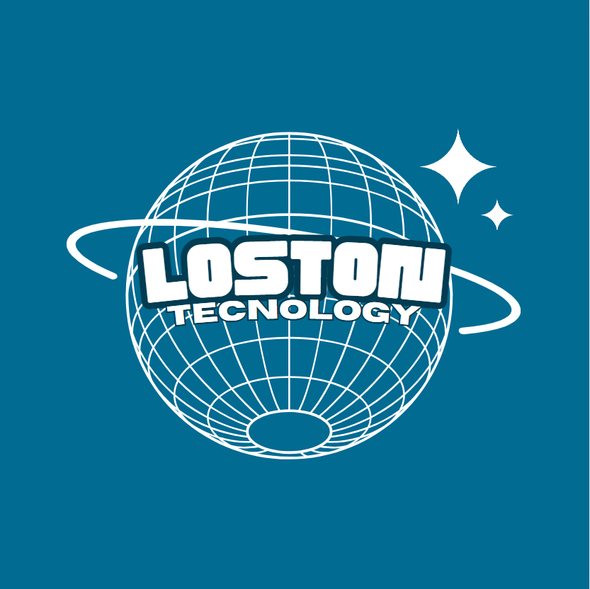

ATT FINAL 2BI
Descrição:
Criamos uma empresa que deveria trabalhar com tecnologias e tudo mais, tivemos patrocinadores, criação de kanban e uma listagem dos softwares utilizados.
Bem-vindo à Loston Technology, sua nova referência em tecnologia de ponta. Na Loston Technology, nosso compromisso é oferecer uma ampla variedade de aparelhos eletrônicos de alta qualidade, projetados para atender às suas necessidades e superar suas expectativas. Desde os mais recentes smartphones e laptops até acessórios inovadores e dispositivos inteligentes para sua casa, nossa missão é proporcionar a você as melhores soluções tecnológicas com um atendimento especializado. Venha descobrir um novo mundo de possibilidades tecnológicas na Loston Technology. Aqui, a inovação encontra a excelência.

ATT FINAL 1BI
Descrição:
Aqui fizemos a criação de um jogo com o desafio de criá-lo completamente no Scratch.
Graviton: "Graviton" é um jogo de ação espacial que coloca os jogadores no comando de uma nave altamente manobrável em meio a um cenário repleto de ameaças. Com uma jogabilidade simples, mas desafiadora, os jogadores devem desviar de projéteis inimigos, evitar obstáculos e destruir as naves inimigas que surgem em seu caminho. O jogo oferece uma variedade de armas e power-ups para ajudar os jogadores em sua missão, desde lasers poderosos até vidas renováveis.